Invited speakers
Andrew T. Chan
Dr. Chan’s research focuses on chronic digestive diseases, including gastrointestinal cancer (colorectal, esophageal, pancreatic), inflammatory bowel disease, diverticulitis, and gastrointestinal bleeding. He utilizes molecular approaches encompassing genetic, metabolomic, proteomic, and biochemical platforms applied to populations ranging from large cohort studies to small biomarker-driven clinical trials. He also has a major effort in investigating the oral and gut microbiome as a determinant and mediator of chronic disease.
Affiliations: Massachusetts General Hospital; Harvard Medical School; Harvard T. H. Chan School of Public Health
Ann-Sofie Sandberg
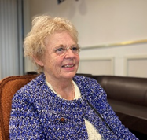 Dr Sandberg has focused her research during the last 30 -40 years on bioavailability of minerals and inhibitors of absorption as well as bioactive compounds in seafood of importance in metabolic disease. In recent years she has become interested in early life nutrition and has together with national colleagues established a mother child birth cohort (NICE) in the North of Sweden. The cohort is designed to investigate the influence of lifestyle factors during pregnancy and early in life on immune maturation and allergy development in the children. Dr Sandberg studies the effect of diet and nutrients, validated with biomarkers, on immune maturation and allergy outcome in the children applying metabolomics and other omics techniques. Dr Sandberg is elected member of the Swedish Royal Academy of Engineering Sciences, honorary doctor in medicine at Sahlgrenska Academy, vice chair of the Royal Swedish Academy of Sciences National Committee of Nutrition and Food Science, holder of the Gustaf Dalén memorial medal. Currently, Dr Sandberg is leading a research group at Division of Food and Nutrition Science at Chalmers.
Affiliations: Chalmers University of Technology
Carl Brunius
Dr. Brunius investigates how diet associates to health outcomes via metabolic regulation, against a backdrop of multiple exposures, including microbiota, lifestyle and organic pollutants. He also develops approaches for precision nutrition, i.e., healthy food tailored for individual requirements. For this purpose, he aims at discovering metabotypes, i.e., groups of individuals with similar metabolic regulation in relation to diet, and to understand what determines such metabotypes. A major research interest lies in developing and applying molecular epidemiological approaches for linking multiple exposures to multiple health outcomes via molecular mediators. His research relies on machine learning and Omics data from both cohort and intervention studies.
Affiliations: Chalmers University of Technology
Clary B. Clish
Our work focuses on the development and application of technologies for the systematic analysis of metabolites in biological specimens. The potential of metabolomics to detect and characterize early metabolic changes in subclinical disease has important implications for discovering pathophysiologic mechanisms and disease markers. We also use metabolomics to understand the molecular mechanisms through which diet, exercise, and the microbiome affect human health.
Affiliations: Broad Institute of MIT and Harvard
Clemens Wittenbecher
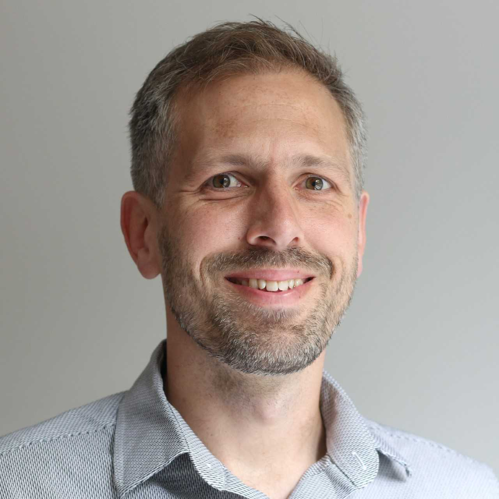 Dr. Wittenbecher’s research leverages molecular profiling data, especially metabolomics, to elucidate the link between dietary composition and cardiometabolic disease risk. Core methods include data-driven network analyses, risk prediction, machine learning, and causal modeling approaches in prospective cohorts and diet intervention trials. Dr. Wittenbecher’s research aims to strengthen the evidence for the causal role of diet composition in cardiometabolic disease etiology and develop biomarkers for precision nutrition approaches.
Affiliations: Division of Food and Nutrition Sciences, SciLifeLab, Chalmers University of Technology
Frank Hu
Dr. Hu’s research has focused on epidemiology and prevention of obesity and cardiometabolic diseases. His work has contributed substantially to current public health policies for global chronic disease prevention. In addition, his research has broken new ground in linking novel biomarkers (e.g., adipokines and metabolites) and gene-diet interactions to the risk of obesity and type 2 diabetes. Dr. Hu has been at the forefront of applying metabolomics techniques to nutritional epidemiologic studies and intervention trials. Currently, he serves as the PI of Dietary Biomarker Development Center at Harvard University
Affiliations: Harvard T. H. Chan School of Public Health; Brigham and Women’s Hospital and Harvard Medical School
Fredrik Bäckhed
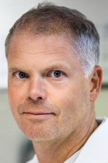 Dr. Bäckhed combines clinical oriented research with gnotobiotic mouse models to address the role of the normal gut microbiota in metabolic diseases. He is appointed Professor at University of Copenhagen and has been guest Professor at University of Oslo (2013-15) and did a sabbatical at University of Hawaii (2019). Dr. Bäckhed was one of the world’s most cited researchers in 2020 in ‘Microbiology’ and ‘Molecular Biology and Genetics’ according to Clarivate Web of Science. Fredrik Bäckhed has received a large number of prestigious awards and appointments. Dr Bäckhed has been elected to the Young Academy of Sweden (2011-2015), The Royal Swedish Academy of Engineering Sciences (2015), The Royal Swedish Academy of Sciences (2018). He has also been appointed Torsten Söderberg Professor in Medicine and Wallenberg Scholar.
Affiliations: University of Gothenburg; University of Copenhagen
Göran Bergström
Dr. Bergström’s research aim to improve and personalize risk prediction of cardiovascular disease. He is head of the Physiology Group at Wallenberg Laboratory and senior consultant in clinical physiology at the Vascular Diagnostic Unit, Sahlgrenska University Hospital. He is chair of the Swedish CArdioPulmonary bioImage Study (SCAPIS), which aims to recruit and extensively phenotype 30,000 subjects aged 50-64 years at six Swedish university hospitals. The ultimate goal of SCAPIS is to reduce mortality and morbidity from cardiovascular disease, chronic obstructive pulmonary disease, and related metabolic disorders.
Affiliations: Department of Molecular and Clinical Medicine, Institute of Medicine, Sahlgrenska Academy, University of Gothenburg
Jessica Lasky-Su
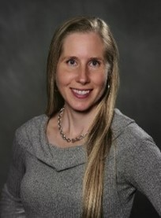 Dr. Lasky-Su is an Associate Professor in Medicine and Associate Statistician and Epidemiologist at Harvard Medical School and Brigham and Women’s Hospital. Over two decades, Dr. Lasky-Su has focused on the analysis of genetics, genomics, and metabolomics data in large scale human studies, with a primary research focus on lung disease pathophysiology. The accumulation of these efforts has resulted in a productive track record of over 200 original research articles. Via multiple PI-funded grants, Dr. Lasky-Su has particularly focused her research on “integrative metabolomics,” that integrates multiomic data while using a metabolomic-centric framework. Dr. Lasky-Su is also a leader in national and international metabolomic organizations for metabolomics, including the President of the Metabolomics Society-the largest International society for metabolomics, in the chairman of the NIH’s Consortium of METabolomic Studies (COMETS)-the largest international consortium of metabolomic epidemiological studies.
Affiliations: Brigham and Women’s Hospital; Harvard Medical School
Jordi Merino
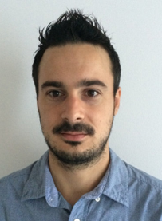 Dr. Merino’s research interests span nutrition, metabolism, and genomics, all aimed at understanding how molecular and environmental factors affect complex metabolic diseases to identify more effective, tailored, and sustainable strategies for preventing diabetes and related complications. A major research interest is genetic determinants of food intake, which provided insights into central nervous system processes regulating appetite and metabolic homeostasis. Dr. Merino has designed and implemented clinical trials to predict individual responses to specific dietary interventions.
Affiliations: Massachusetts General Hospital
Karl Michaëlsson
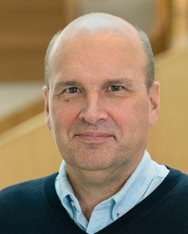 Professor of medical epidemiology, Department of Surgical Sciences, Uppsala University; Director of the EpiHub at Uppsala University; Vice-dean for research infrastructures, and Director of Swedish Infrastructure for Medical Population-based Life-course and Environmental Research (SIMPLER)Dr. Michaëlsson has a broad interest in late-onset disease epidemiology with a primary focus on preventing fragility fractures. He is the principal investigator of SIMPLER, a Swedish national research infrastructure (https://simpler4health.se/). This national infrastructure, initiated in 1987, includes information about 110,000 men and women, a biobank with DNA, blood, urine, fat biopsy, and stool samples, and a growing component of OMICs data. Over the years, the participants have undergone repeated examinations, and the SIMPLER database has been regularly updated against national registries.
Affiliations: Department of Surgical Sciences, Unit of Medical Epidemiology, Uppsala University
Liming Liang
Dr. Liming Liang is a statistical geneticist with expertise and intensive experience in a variety of large-scale high dimensional omics studies for complex diseases and traits, including genome-wide association studies (GWAS), disease mapping using gene expression, and DNA methylation, metabolomics analyses for complex disease etiology and prediction. His research is focused on developing and applying computational and statistical tools required for understanding the human genome, epigenome, transcriptome, and metabolome, with a particular focus on chronic diseases.
Affiliations: Harvard T. H. Chan School of Public Health
Majken K. Jensen
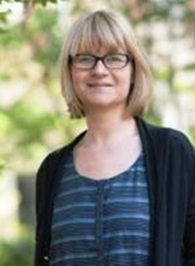 Dr. Jensen’s primary research fields include the identification of aging-related chronic diseases biomarkers (fatty liver disease, type 2 diabetes, cardiovascular, cognitive impairment, dementia); investigation of high-dimensional data (genome-wide association studies, proteomics, and other -omics) in observational epidemiology; and advancement of methodological approaches for the epidemiological investigation of biomarkers in chronic diseases. Her research team also works on combining national data registries with biomarkers and images from a tissue biobank estimate prognosis and reclassify (biopsy-proven) diseases.
Affiliations: University of Copenhagen
Marju Orho-Melander
With main focus in cardiometabolic diseases, Dr Orho-Melander has successfully moved to new areas of research during her career starting with experimental endocrinology and moving to genetic epidemiology, nutrition epidemiology and gene-diet interaction studies, and today utilizing and combining this interdisciplinary prior knowledge in studies of the gut microbiome, diet and circulating biomarkers in large population-based cohorts. The longer-term purpose of the work of Orho-Melanders group is to provide novel intervention strategies aiming to more effective prevention strategies of cardiometabolic diseases.
Affiliations: Lund University
Marta Guasch-Ferré
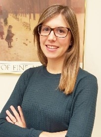 Dr. Guasch-Ferré’s research focuses on investigating the role of dietary and lifestyle factors in chronic diseases, specifically cardiovascular disease and type 2 diabetes. She has incorporated high-throughput –omics techniques, metabolomics, and genetics, into traditional epidemiological analysis to gain insights into underlying mechanisms that could explain the associations of diet and lifestyle factors with cardiovascular disease and type 2 diabetes.
Affiliations: Harvard T. H. Chan School of Public Health; Channing Division of Internal Medicine, Harvard Medical School
Mats Jirstrand
Dr. Jirstrand’s research covers learning dynamical systems, non-linear filtering, and time-series analysis (with applications in pharmacometrics, personalized nutrition, systems biology, and physiology). Furthermore, his group is active in artificial intelligence methods and applications such as deep neural networks, reinforcement learning; federated learning; and natural language processing. Recent work by his team is in mathematical modeling for personalized nutrition and includes algorithms for detecting groups of individuals who respond differently to the same diet (also known as metabotyping).
Affiliations: Fraunhofer-Chalmers Centre
Matthias B Schulze
Dr. Schulze’s research focuses on dietary risk factors for type 2 diabetes, dietary pattern analysis, biomarkers of nutritional intake, gene-diet interaction, and biochemical and genetic predictors of diabetes and its complications. Further research interests include risk prediction models and healthy metabolic obesity. Dr. Schulze is the Principal Investigator of the EPIC-Potsdam study and a center Principal Investigator of the NAKO Health Study.
Affiliations: German Institute of Human Nutrition
Miguel A. Martinez-Gonzalez
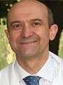 Dr. Martínez-González is a chronic disease epidemiologist with >30 years of experience studying chronic diseases’ nutritional, lifestyle, clinical, metabolomic, and genetic determinants. He has designed and directed large cohorts, such as the SUN (‘Seguimiento Universidad de Navarra’) cohort (1999-2022, with >23,000 participants), and nutritional intervention trials fro primary cardiovascular prevention, such as PREDIMED trial (2003-2013, with 7,447 participants) and PREDIMED-Plus trial (2013-2022, with 6,874 participants).
Affiliations: University of Navarra; Harvard T. H. Chan School of Public Health; CIBEROBN
Paul Franks
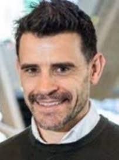 I am interested in i) the intersection of epidemiology and technology - next-generation epidemiology, ii) the deployment of this approach across diverse populations, and iii) the use of these data to develop precision medicine. I am also interested in addressing health disparities, especially those linked to ethnicity.
Affiliations: Novo Nordisk Foundation; Lund University Diabetes Center; Harvard T. H. Chan School of Public Health
Qi Sun
Dr. Sun’s primary research interests are identifying and examining biomedical risk factors, including dietary biomarkers, for type 2 diabetes, obesity, and cardiovascular disease. His research is primarily based on large-scale cohort studies, including the Nurses’ Health Study I and II and the Health Professionals Follow-up Study. Dr. Sun is also interested in environmental pollutants, especially those from dietary sources, in the etiology of obesity and type 2 diabetes.
Affiliations: Harvard T. H. Chan School of Public Health; Brigham and Women’s Hospital; Harvard Medical School
Rikard Landberg
Dr. Landberg studies the preventive role of plant-based foods using observational- and intervention studies integarating OMICs techniques. Metabolomics is a key technique in Dr. Landbergs’ research program and it is developed and applied for discovery and validation of exposure and prediction biomarkers, and for molecular phenotyping as the basis for tailored dietary strategies towards precision nutrition. Novel biomarkers from his lab are extensively used all over the world.
Affiliations: Chalmers University of Technology
Shilpa N Bhupathiraju
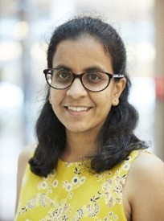 Dr. Bhupathiraju’s primary research interests include examining the role of diet and lifestyle in preventing cardiometabolic diseases, especially among high-risk groups such as Hispanics and South Asians. Her research integrates diet, metabolomics, and proteomics data in prospective cohort studies to understand mechanisms underlying diet-disease associations and to identify novel biomarkers of dietary intake.
Affiliations: Harvard
Walter Willett
Dr. Willett has focused much of his work over the last 40 years on the development and evaluation of methods, using both questionnaire and biochemical approaches, to study the effects of diet on the occurrence of major diseases. He has applied these methods starting in 1980 in the Nurses’ Health Studies I and II and the Health Professionals Follow-up Study. Together, these cohorts, which include nearly 300,000 men and women with repeated dietary assessments, provide the most detailed information on the long-term health consequences of food choices. Dr. Willett’s research has shaped the methods in nutrition epidemiology and public health nutrition policies over the last decades.
Affiliations: Harvard T. H. Chan School of Public Health